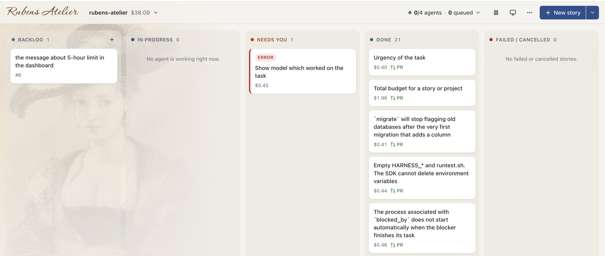

Coding agents plan, implement, pass CI and open the pull request. You review the work and sign off with a merge. Point it at your GitHub issues, or start a project from scratch.

Each story moves through roles, the way a canvas moved through Rubens' studio. Every role is a prompt you can read and change, and each one hands its work to the next as an artifact.
Reads the repo in read-only mode and writes the plan: approach, files, test plan, risks. If it needs a decision, it asks you. If the story is too big for one PR, it proposes a split.
Follows the plan, writes code and tests, and commits. The harness runs your verify_command itself and hands back the failures until they pass.
Starts a fresh session with no Write or Edit tools and reviews the diff against the plan. Requested changes go back to the implementer with the comments attached.
Answer the questions in your inbox, review a green PR that has already been reviewed, and merge it. Turn on auto_merge to let the factory sign for you.
A workflow is a deterministic state machine written in YAML. The agent never picks its next step: it returns a verdict, and the workflow maps that verdict to the next state.
The implementer resumes its session with the reviewer's comments.
It gets the names of the failed checks, their links and the tail of the Actions log.
Parallel stories build on each other's merged work. The base branch is merged in, never rebased.
max_visits and on_exhausted stop implement ⇄ review ping-pong. An agent that runs out of turns, budget or time returns a failure reason as its verdict, and the workflow can route that reason like any other verdict.
Every transition is a compare-and-set on the item's version, so a redelivered message, a double click or a stale answer moves nothing.
# workflows/story.yaml plan: agent: planner disallowed_tools: [Write, Edit] verdicts: [ready, needs_clarification, too_big] resume: true max_visits: 3 on_exhausted: needs_human next: ready: implement needs_clarification: clarify too_big: needs_human error: needs_human
One HTTP service on FastAPI, Celery, Redis and Postgres. Agents run as long-running background tasks that you can stream, cancel and resume.
Backlog, working, needs human, done, failed. Watch any agent session live: prompt, thinking, tool calls, verify output.
Create an epic and up to 100 stories in one call. With blocked_by and auto_start, a story starts by itself once its blockers have merged.
Set budget_usd on a project, an epic or a story. Before each run the harness applies the tightest limit and won't start an agent once it is spent.
Agent steps wait in a priority queue for a free slot. The pace follows Claude Code's subscription windows, and you can change the limits without a restart.
Lessons about conventions, pitfalls and CI quirks carry over between stories. Notes that agents propose wait for your approval.
Bash runs in an OS sandbox with a single list of allowed domains. The GitHub token never lands in .git/config or the agent's environment.
Leases with heartbeats, at-least-once delivery, and resuming cut-off sessions. Transcripts are archived to Postgres when Redis expires them.
Waits on GitHub check runs without holding a worker. Webhooks re-check only the stories they concern, with polling as a fallback.
Each agent gets only the tools it may use and, optionally, a minimal system prompt. Sessions stay short, so every request costs fewer tokens.
Set it per story, per workflow state or per task.
The default, through the Claude Agent SDK, with an API key or a subscription OAuth token.
The same agent loop running against any model on OpenRouter.
codex exec in the same sandbox, with the same write and secret-file rules.
You need Docker, a key for your agent's provider, and a GitHub token or a GitHub App.
git clone https://github.com/designeng/rubens-atelier cd rubens-atelier cp .env.example .env # ANTHROPIC_API_KEY, HARNESS_API_TOKEN, # HARNESS_GITHUB_TOKEN docker compose up -d --build # board → http://localhost:8000/board
# the factory as MCP tools: projects, board, # stories, plans, inbox, notes, scheduler claude mcp add factory -- \ uv run --directory /path/to/rubens-atelier \ python -m app.mcp_server
Then ask Claude to plan an epic, and answer the factory's questions from your terminal.